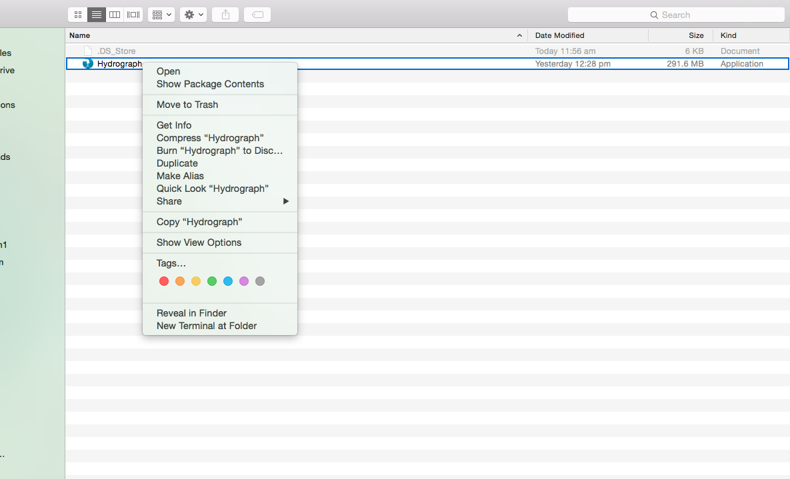
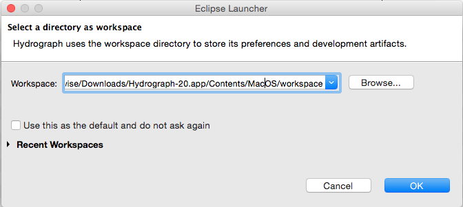
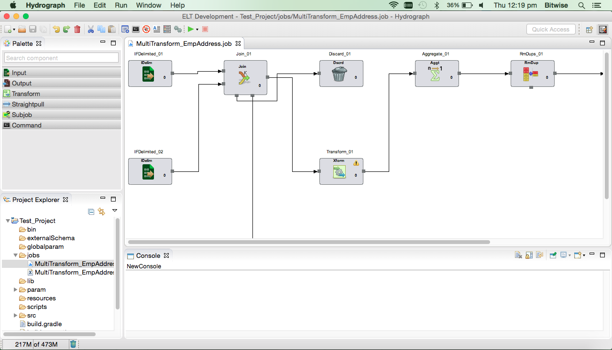

Launching Hydrograph on Macintosh
Download the appropriate Hydrograph build from shared location. Right click on Hydrograph and click Open.

Select workspace location, it will show either default or previous workspace location.

Click OK.
